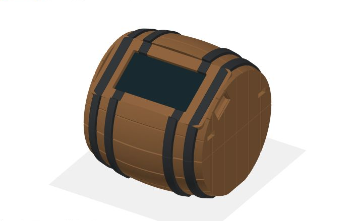

Configuration · Utilisation · Questions fréquentes
Ton tonneau,
tout simplement.
Du premier branchement au suivi du vieillissement : les étapes utiles pour configurer RumScale, l’offrir et comprendre ce qu’il affiche.
Guide RumScale · Configuration et FAQ · Vérifié le 30 septembre 2026.
Première mise en route
Un câble USB, ton téléphone et quelques minutes suffisent pour connecter un tonneau déjà préparé.
- Installe la base sur une table stable et plane. Le tonneau doit reposer entièrement sur son plateau. Laisse les câbles détendus : ils ne doivent ni tirer sur la base ni se coincer dessous.
- Branche l’alimentation USB-C. Une alimentation USB de 5 V / 1 A convient. Attends la fin du démarrage et de la connexion au Wi-Fi.
- Connecte le tonneau au Wi-Fi de la maison. Si l’écran indique
RumBarrel-setup, suis la configuration Wi-Fi. - Ouvre http://rum.local sur un téléphone connecté au même réseau que le tonneau. Aucune application ni aucun compte RumScale n’est nécessaire.
- Vérifie le niveau et les réglages. Si le tonneau t’a été offert déjà rempli et calibré, conserve ses repères. Si l’app affiche « Pas encore initialisé », suis les quatre étapes de calibration avant de le remplir.
Connecter ou changer le Wi-Fi
RumScale utilise un réseau Wi-Fi 2,4 GHz. Un changement de maison ne demande aucune remise à zéro de la balance.
Première connexion ou nouveau domicile
- Branche le tonneau. S’il connaît déjà un réseau, il tente de s’y connecter trois fois, pendant environ 20 secondes à chaque essai. Prévois un peu plus d’une minute avec la recherche des réseaux.
- Quand
RumBarrel-setupapparaît, rejoins ce réseau depuis les réglages Wi-Fi du téléphone. Il est ouvert, sans mot de passe. Si le téléphone annonce « pas d’Internet », choisis de rester connecté. - Le portail de configuration peut s’ouvrir automatiquement. Sinon, ouvre http://192.168.4.1 dans le navigateur, avec http.
- Choisis le réseau de la maison, entre son mot de passe puis valide. Le tonneau mémorise ce réseau et poursuit son démarrage.
- Reconnecte le téléphone au réseau domestique, puis ouvre http://rum.local. Le téléphone peut utiliser la bande 5 GHz si elle appartient au même réseau local ; le tonneau, lui, doit disposer du 2,4 GHz.
Si le tonneau est encore connecté à l’ancien réseau et que tu veux en choisir un autre, ouvre Réglages → Système → Oublier le Wi-Fi. Il redémarre et propose sa configuration. La calibration, le niveau de référence et l’historique restent enregistrés.
Si la configuration expire
Après environ 5 minutes sans activité dans le portail, le tonneau passe en mode autonome. Connecté à RumBarrel-setup, tu peux alors ouvrir l’app à http://192.168.4.1. Cette adresse affiche désormais l’app de suivi : le portail permettant de choisir un Wi-Fi est fermé. Débranche puis rebranche le tonneau pour relancer la configuration.
La pesée est suspendue pendant le portail de configuration. Elle reprend quand la connexion réussit ou quand le délai expire. En mode autonome, le niveau reste utilisable dans l’app locale, mais Telegram et la synchronisation de l’heure nécessitent une connexion à Internet. Dans le logiciel actuel, l’écran peut rester sur « Configuration Wi-Fi » et allumé même après expiration du portail : consulte alors les mesures dans l’app. Après un démarrage hors ligne, aucun nouveau point horaire n’est enregistré tant que l’heure n’est pas synchronisée.
Si rum.local ne répond pas
Vérifie d’abord que le téléphone et le tonneau partagent le même réseau, sans isolation « invités ». Essaie l’adresse IP du tonneau, visible dans la liste des appareils de ton routeur. Si un bouton externe est installé, la page Réseau de l’écran affiche également cette adresse et un QR code. Saisis l’adresse sous la forme http://adresse-IP.
Calibrer la balance et le tonneau
Cette opération établit le poids réel, puis les repères « vide » et « plein ». Fais-la à la première installation ou après une modification de la base.
Prépare un objet dont la masse a été vérifiée sur une autre balance, au moins 100 g, ainsi que le tonneau encore vide. Pose la base à son emplacement définitif. Ouvre Réglages → Initialisation et respecte cet ordre.
- Base vide — Faire le zéro. Retire le tonneau et tout autre objet du plateau. Attends que le poids affiché se stabilise, puis appuie sur Faire le zéro.
- Poids connu — Calibrer la balance. Pose l’objet de référence, attends la stabilisation et saisis sa masse exacte en grammes dans Masse posée. Appuie sur Calibrer la balance. Retire ensuite l’objet et vérifie que la mesure revient près de zéro.
- Tonneau vide — Enregistrer le tonneau vide. Pose le tonneau vide, avec sa bonde, son robinet et les accessoires qui resteront présents pendant l’utilisation. Attends la stabilisation puis enregistre-le.
- Tonneau plein — Enregistrer le tonneau plein. Remplis-le jusqu’au volume de référence annoncé, repose-le et attends la stabilisation. Saisis sa capacité en litres : 2 L est un exemple, à remplacer par la valeur réelle de ton tonneau. Appuie sur Enregistrer le tonneau plein.
La stabilisation demande environ 20 secondes de calme, parfois davantage après une manipulation. L’indication de stabilisation doit disparaître ; il ne suffit pas d’attendre deux secondes.
La première validation « plein » lance aussi le vieillissement. Le volume estimé dépend de la masse de liquide et de sa densité ; celle-ci est calculée si le rapport entre le poids ajouté et le volume déclaré est plausible. Un volume déclaré incorrect donnera des litres incorrects.
Quand refaire les repères ?
- Base, capteurs ou montage mécanique modifiés : reprends la calibration complète.
- Tonneau neuf qui s’imbibe : son bois prend du poids. Lorsqu’il sera de nouveau vide, enregistre son poids vide avec les mêmes accessoires, puis son nouveau repère plein après remplissage.
- Nouveau lot : conserve une calibration valide, vérifie les repères vide/plein et utilise Redémarrer le vieillissement si tu veux compter un nouveau cycle. Enregistrer à nouveau « plein » ne remet pas à zéro un vieillissement déjà commencé.
Un tonneau déjà rempli sans repère vide valide ne peut pas être correctement initialisé par ces quatre boutons. Demande les références à la personne qui l’a préparé, ou attends de pouvoir le vider. Ne fais jamais le zéro de la base avec le tonneau posé dessus.
Utilisation au quotidien
Laisse le tonneau sur sa base. La pesée suit le liquide restant et distingue les services des variations lentes.
Lire l’écran et l’app
- Pourcentage : niveau calculé entre les repères vide et plein enregistrés.
- Litres : estimation à partir du poids du liquide et de la densité configurée.
- Vieillissement : durée depuis la date de départ mémorisée.
- Dernier service et historique : les variations confirmées sont enregistrées. Le graphique reçoit habituellement un point par heure, plus des points lors des événements.
- Part des anges : estimation des pertes lentes. Le système ne peut pas distinguer parfaitement évaporation, absorption par le bois et dérive des capteurs.
Évite de poser un verre ou une bouteille sur le plateau. Après un service, laisse le tonneau tranquille : le système attend un palier stable puis environ 3 minutes pour confirmer l’événement. Une variation inférieure à environ 25 g n’est pas enregistrée comme un service individuel.
Veille et réveil de l’écran
Sur la carte ideaspark, seul le rétroéclairage s’éteint, après 5 minutes par défaut. La pesée, le Wi-Fi et les alertes continuent. Donne deux petits coups brefs sur la base pour le rallumer ; ce geste ne change pas de page.
Dans Réglages → Le tonneau → Mise en veille de l’écran, choisis Jamais, 1, 5, 10, 30 minutes ou 1 heure, puis appuie sur Enregistrer. Le nom affiché se règle au même endroit. Garde la densité et la capacité issues de l’initialisation tant qu’elles sont correctes : changer ces champs ne recrée pas les repères de poids vide et plein.
Si un bouton externe est installé
Un appui court réveille l’écran ou passe à la page suivante : niveau, vieillissement, réseau, diagnostic. L’écran revient à la page principale après environ 30 secondes. Un appui maintenu affiche une confirmation après 3 secondes et redémarre le vieillissement à 6 secondes ; relâche avant la fin pour annuler. Ce bouton optionnel est distinct des petits boutons EN et BOOT de la carte.
Coupure de courant
La calibration, les repères, les réglages, la date de vieillissement et l’historique déjà enregistré restent en mémoire. Après le redémarrage, l’appareil retrouve l’heure sur Internet et recalcule les jours. Il ne mesure rien lorsqu’il est débranché et ne reconstitue pas chaque service effectué pendant la coupure.
Recevoir les alertes Telegram
Telegram est facultatif. Il permet de recevoir les services confirmés et les alertes de niveau à 50 %, 25 % et 10 %.
- Dans Telegram, ouvre le bot officiel @BotFather, envoie
/newbotet suis les instructions. Conserve le jeton du bot fourni, comme un mot de passe. - Ouvre la conversation avec ton nouveau bot et appuie sur Démarrer ou envoie-lui un message. Cette première action l’autorise à t’écrire.
- Pour une discussion privée, ouvre @userinfobot et relève ton identifiant numérique. C’est un bot tiers : ne lui envoie jamais le jeton. Le champ demandé par RumScale est l’identifiant de discussion, pas le nom
@utilisateur. - Dans Réglages → Alertes Telegram, colle le jeton et l’identifiant, choisis si tu veux être prévenu à chaque service, puis appuie sur Enregistrer.
- Appuie sur Envoyer un test, attends quelques secondes puis vérifie la réception réelle dans Telegram.
Le message « Message de test envoyé » de l’app confirme la mise en attente du test, pas sa livraison. Sans Internet ou avec des coordonnées incorrectes, il peut ne pas arriver. Vérifie les champs, le premier message envoyé au bot, son éventuel blocage et la ligne d’état Telegram.
Décocher Me prévenir à chaque service désactive seulement ces notifications ; les seuils de niveau restent actifs. Pour suspendre toutes les notifications, efface l’Identifiant de discussion et enregistre. Le champ du jeton vide signifie « conserver le jeton existant ».
Les alertes dont l’envoi échoue sont abandonnées : il n’y a pas de rattrapage automatique au retour du réseau. En cas de changement de propriétaire, configure son bot et sa discussion pour que les messages lui soient adressés.
Obtenir l’identifiant sans bot tiers
Après avoir envoyé un message privé à ton nouveau bot, ouvre en navigation privée l’adresse ci-dessous en remplaçant TON_JETON par le jeton reçu de BotFather. Ne partage pas cette adresse personnalisée.
https://api.telegram.org/botTON_JETON/getUpdatesDans la réponse, repère ton message et le nombre contenu dans message → chat → id. Copie ce nombre dans Identifiant de discussion, puis ferme la fenêtre privée. Si result est vide, envoie un nouveau message au bot et actualise. Cette procédure suppose un bot neuf, réservé à RumScale, sans autre application qui reçoit ses messages.
Références : création d’un bot Telegram et méthode officielle getUpdates.
Redémarrer ou remettre à zéro
Choisis l’action qui correspond à ton besoin. Le mot « reset » peut désigner quatre opérations très différentes.
| Besoin | Action dans l’app | Effet |
|---|---|---|
| Relancer l’appareil | Réglages → Système → Redémarrer | Conserve les réglages, le Wi-Fi, la calibration et l’historique enregistré. |
| Changer de réseau | Réglages → Système → Oublier le Wi-Fi | Efface le réseau mémorisé et redémarre vers la configuration Wi-Fi. Conserve les données du tonneau. |
| Commencer un nouveau vieillissement | Réglages → Le tonneau → Redémarrer le vieillissement | Repart à zéro jour après confirmation. Conserve calibration, repères, historique, cumul de part des anges et état des alertes de seuil ; ajoute un événement au journal. |
| Recommencer toute l’installation | Réglages → Système → Remise à zéro complète | Efface calibration, repères vide/plein, nom, réglages, Telegram, date de vieillissement et historique. Le Wi-Fi reste mémorisé. |
Après une remise à zéro complète, reprends les quatre étapes d’initialisation. Pour effacer aussi le Wi-Fi, utilise séparément Oublier le Wi-Fi.
Sur la carte : un appui sur EN / Reset redémarre simplement l’ESP32, comme une coupure d’alimentation. BOOT sert au téléversement du logiciel ; il ne remet pas les réglages d’usine à zéro. Il n’y a pas de raccourci de remise à zéro complète sur ces deux boutons.
Offrir le tonneau ou changer de maison
Un tonneau déjà préparé conserve ses mesures pendant le transport. Son destinataire a surtout besoin de le connecter à son Wi-Fi.
Avant de l’offrir
- Si tu livres le tonneau rempli, enregistre son repère vide avant le remplissage, puis son repère plein une fois rempli. Vérifie que le niveau affiché est cohérent.
- Transmets la capacité, la date de départ et ce guide. Signale si le vieillissement doit continuer ou repartir à zéro.
- Dans Telegram, efface l’identifiant de discussion et enregistre pour arrêter les messages vers ton compte. Le destinataire pourra configurer son propre bot.
- Tu peux utiliser Oublier le Wi-Fi avant de débrancher, mais ce n’est pas obligatoire : l’absence de l’ancien réseau déclenchera le portail au prochain démarrage.
Chez le destinataire
Pose la base sur une table stable, replace le tonneau et branche-le. Après l’essai de l’ancien réseau, rejoins RumBarrel-setup et suis la configuration Wi-Fi. Laisse ensuite la mesure se stabiliser. Ne fais pas de remise à zéro complète pour un simple changement de propriétaire.
Si le tonneau arrive rempli et fonctionne déjà, garde sa calibration. « Enregistrer le tonneau vide » avec du liquide à l’intérieur fausserait toutes les mesures suivantes. Si les repères ont été perdus, retrouve-les avec la personne qui l’a préparé ou attends une vidange pour refaire l’initialisation.
Dépannage rapide
Commence par le symptôme observé. Une remise à zéro complète est rarement le bon premier geste.
| Symptôme | À vérifier |
|---|---|
| Écran noir | Donne deux petits coups sur la base pour sortir de veille. Si rien ne change, vérifie l’alimentation et le câble USB, puis redémarre. Si l’app répond, la balance reste alimentée. |
| rum.local introuvable | Téléphone et tonneau sur le même réseau ; pas de réseau invités isolé. Essaie l’IP attribuée par le routeur avec http://. En mode autonome, utilise 192.168.4.1. |
| Réseau domestique absent de la liste | Active le Wi-Fi 2,4 GHz et rapproche le tonneau du routeur. Un réseau exclusivement 5 GHz n’est pas compatible. |
| La page 192.168.4.1 montre la jauge, pas le choix Wi-Fi | Le portail a expiré. Redémarre le tonneau et recommence la configuration quand RumBarrel-setup apparaît. |
| « Pas encore initialisé » | Termine les quatre étapes dans Réglages → Initialisation. Si le tonneau est déjà rempli, consulte d’abord la personne qui l’a préparé. |
| Poids instable | Attends au moins 20 secondes sans toucher la base. Écarte les câbles tendus, contacts parasites du plateau et vis desserrées. Une table souple ou des vibrations peuvent empêcher la stabilisation. |
| Poids à zéro ou « HX A muet » | Vérifie l’alimentation du HX711, la masse commune et les connexions DT/SCK. Une calibration ne corrige pas une absence de signal. Consulte le câblage du montage actif. |
| « La mesure n’a pas bougé » pendant la calibration | L’objet doit charger le plateau, et les capteurs doivent pouvoir se déformer. Vérifie la mécanique et le câblage avant de recommencer. |
| Niveau supérieur à 100 % | Vérifie les accessoires et l’absence d’objet ajouté sur le plateau. Si le tonneau est réellement plus rempli qu’au repère initial, enregistre le bon repère plein et sa capacité. |
| Vieillissement « en cours » ou J+? | Le départ est mémorisé, mais l’heure n’est pas disponible. Rétablis une connexion Internet et vérifie « heure synchronisée » dans Réglages → Système. N’efface pas le compteur. |
| Aucun graphique au début | La courbe a besoin d’au moins deux points. Attends environ une heure, avec une mesure stable et l’heure synchronisée. |
| Le test Telegram n’arrive pas | Vérifie l’accès Internet, le jeton, l’identifiant de discussion et que tu as démarré la conversation avec le bon bot. Enregistre puis renvoie un test et contrôle Telegram directement. |
Questions fréquentes
Les réponses aux situations courantes, sans avoir à parcourir tout le guide.
Faut-il installer une application ou créer un compte ?
Non. Le suivi s’ouvre dans le navigateur à http://rum.local, sur le même réseau que le tonneau. Un compte Telegram est nécessaire uniquement si tu souhaites utiliser ses alertes.
Le tonneau peut-il fonctionner sans Internet ?
Oui pour la pesée et le suivi local après la phase de connexion. En mode autonome, rejoins RumBarrel-setup puis ouvre http://192.168.4.1. Telegram ne fonctionne pas et, après une coupure électrique, le calcul des jours et les nouveaux points horaires attendent la synchronisation de l’heure. L’écran peut rester sur « Configuration Wi-Fi » : l’app locale reste le moyen de lire les mesures.
Que se passe-t-il si je l’emmène dans une autre maison ?
Il essaie son ancien réseau puis propose RumBarrel-setup. Configure le nouveau Wi-Fi 2,4 GHz. La calibration, les références et la date de vieillissement restent mémorisées. Voir le parcours cadeau.
Mon téléphone affiche « pas d’Internet » sur RumBarrel-setup. Est-ce normal ?
Oui. Ce réseau relie directement le téléphone au tonneau. Reste connecté et ouvre http://192.168.4.1. Une fois le Wi-Fi domestique configuré, reconnecte le téléphone au réseau de la maison.
Pourquoi le démarrage dure-t-il environ une minute ?
Quand un réseau est déjà mémorisé, le tonneau fait jusqu’à trois essais d’environ 20 secondes, plus la recherche des réseaux. Si la connexion échoue, il ouvre son portail de configuration. Pendant cette phase, la pesée ne fonctionne pas encore.
Comment rouvrir le choix du Wi-Fi après cinq minutes ?
Débranche puis rebranche le tonneau. Si l’app locale reste accessible, Réglages → Système → Redémarrer produit le même effet. Le portail s’ouvre si aucun réseau configuré n’est joignable.
Puis-je consulter le tonneau depuis l’extérieur de la maison ?
L’app est locale : rum.local ne devient pas accessible à distance grâce à ce site de documentation. Telegram permet de recevoir les alertes loin de chez toi. L’app n’a pas de mot de passe ; ne crée pas de redirection de port Internet vers le tonneau.
Une coupure de courant efface-t-elle mes données ?
Non. Les réglages et l’historique déjà enregistrés restent en mémoire. La durée de vieillissement est recalculée lorsque l’heure Internet revient. Les mesures pendant la coupure, les messages en attente et une petite partie des pertes lentes non encore sauvegardées peuvent manquer.
Pourquoi l’écran s’éteint-il alors que le tonneau est branché ?
Il se met en veille après cinq minutes par défaut. Seul le rétroéclairage s’éteint ; la pesée et le réseau continuent. Deux petits coups sur la base le réveillent. Le délai se règle dans Réglages → Le tonneau.
Les deux coups sur la base changent-ils de page ?
Non, ils réveillent seulement l’écran. Pour parcourir les pages de l’écran, il faut le bouton externe optionnel. Toutes les fonctions principales restent accessibles dans l’app web sans ce bouton.
Que font les boutons EN et BOOT près de l’USB ?
EN, parfois marqué Reset, redémarre la carte sans effacer les données. BOOT sert à installer le logiciel. Aucun des deux ne lance une remise à zéro complète ni une calibration.
Quelle masse utiliser pour calibrer ?
Un objet d’au moins 100 g dont tu connais précisément la masse totale, mesurée sur une autre balance. Inclus tout son contenant. Ne saisis pas automatiquement 1 000 g pour une bouteille d’un litre.
Dois-je refaire le zéro quand je pose le tonneau ?
Non. Faire le zéro correspond au plateau entièrement vide pendant la calibration. Le tonneau vide a sa propre étape, « Enregistrer le tonneau vide ». Faire le zéro avec le tonneau posé fausserait la mesure.
J’ai reçu le tonneau déjà rempli. Dois-je l’initialiser ?
Conserve ses réglages s’il a été préparé et affiche un niveau cohérent. Configure seulement ton Wi-Fi et, si nécessaire, Telegram. S’il n’a aucun repère vide valide, demande les références au donateur ou attends de le vider ; ne l’enregistre pas comme « vide » avec son liquide.
Pourquoi attendre avant d’enregistrer un poids ?
Les mesures sont lissées et un état stable demande environ 20 secondes de calme. Une pression de la main, un câble tendu ou une table qui bouge modifie la charge. Attends que l’indication de stabilisation disparaisse.
Pourquoi une alerte de service arrive-t-elle en retard ?
Après la stabilisation, RumScale attend environ trois minutes pour confirmer le service. Il peut ainsi annuler la variation créée par un objet posé puis retiré. Les tout petits services, sous environ 25 g, ne sont pas reconnus comme événements individuels.
Les alertes manquées reviennent-elles quand Internet revient ?
Non. Les envois échoués sont abandonnés. L’appareil ne reconstitue pas non plus des alertes pour les services effectués lorsqu’il était débranché.
« Message de test envoyé » signifie-t-il que Telegram fonctionne ?
Le bouton place le message en attente. Seule sa réception dans ta conversation Telegram confirme le fonctionnement de bout en bout. Sans réception, vérifie Internet, le jeton, l’identifiant et la conversation démarrée avec ton bot.
Comment désactiver Telegram sans tout effacer ?
Dans Réglages → Alertes Telegram, efface l’identifiant de discussion puis enregistre. Décocher seulement « Me prévenir à chaque service » laisse les alertes de seuil actives. Laisser le champ du jeton vide conserve son ancienne valeur.
Comment repartir à zéro jour sans recalibrer ?
Utilise Réglages → Le tonneau → Redémarrer le vieillissement, puis confirme. Les repères de poids et l’historique restent enregistrés. Une remise à zéro complète n’est pas nécessaire.
La remise à zéro complète efface-t-elle aussi le Wi-Fi ?
Non. Elle efface les données et réglages RumScale, mais conserve le réseau. Pour effacer celui-ci, utilise séparément Réglages → Système → Oublier le Wi-Fi. À l’inverse, oublier le Wi-Fi conserve la calibration et l’historique.
Le volume est-il une mesure exacte du liquide ?
C’est une estimation par pesée. Elle dépend de la calibration, du poids du tonneau vide, de la densité et du montage mécanique. Le bois qui s’imbibe et la dérive des capteurs peuvent la modifier. Reprends les références lors d’une vidange si elles ne correspondent plus au tonneau.
Un nouveau remplissage redémarre-t-il le vieillissement ?
Le premier repère plein le démarre. Les suivants conservent une date déjà définie. Pour un nouveau lot dont tu souhaites mesurer la durée, utilise aussi « Redémarrer le vieillissement ».
Combien de temps l’historique est-il conservé ?
La mémoire contient 8 760 points, soit environ un an à un point par heure ; les points ajoutés lors des événements réduisent cette durée. Le journal conserve les 128 derniers événements, et l’app en affiche jusqu’à 40. Les plus anciens sont remplacés progressivement.
Boîtier tonneau imprimé en 3D
La version V2 protège la carte ideaspark tout en gardant l’écran et les connecteurs accessibles.

- Dimensions extérieures d’environ 74 × 82 × 75 mm, fond plat et écran incliné de 30°.
- Fenêtre d’écran 46 × 25 mm ; logement adapté à une carte mesurée à 32,6 mm de largeur et 5 mm d’épaisseur.
- Passage USB intérieur 13 × 8 mm, port à environ 5,1 mm de l’extrémité ; passage arrière de 10 mm pour les fils.
- Deux supports intégrés espacés de 26 mm, pour deux vis M2 × 5 mm à tête cylindrique ou bombée, non fraisée.
- Deux coques assemblées par quatre clips, sans colle ; espace de 36 mm prévu derrière la carte pour les connecteurs Dupont.
Avant l’impression complète
Imprime d’abord le gabarit de carte et de vis avec ton filament définitif. Vérifie la fenêtre, l’alignement des trous et l’appui sur le circuit. Le gabarit ne reproduit pas le tunnel USB : après impression de la coque haute, vérifie aussi l’insertion réelle de ta fiche. Les contrôles numériques du modèle ne remplacent pas ce test physique. Les coques V1 et V2 ne s’assemblent pas entre elles.
Impression et montage
Unités : millimètres, échelle 100 %. Les fichiers sont déjà orientés : coque basse sur son fond, coque haute sur le plan de joint, gabarit face visible sur le plateau. Point de départ : buse 0,4 mm, couches de 0,20 mm, quatre parois, cinq couches pleines et 15–20 % de remplissage. Le PETG donne davantage de souplesse aux clips ; teste ceux-ci si tu choisis du PLA ou un filament bois.
Prévois des supports sous la voûte et certains rebords de la coque haute, et vérifie les surplombs de la coque basse. Nettoie les bavures. Place la carte dans la coque haute, puis visse doucement depuis le dos du circuit imprimé dans les deux avant-trous de 1,6 mm. Arrête dès que la carte tient : les vis ne doivent ni courber la carte ni mettre le verre sous pression.
Vérifie la fiche USB avant de fermer. Une fiche avec un surmoulage de 6–7 mm de haut laisse plus de marge qu’une fiche de 8 mm. Branche les Dupont, range les fils à l’écart des clips et emboîte les coques. Les boutons BOOT et EN restent des commandes de la carte, pas des boutons de configuration quotidienne.
Montage et maintenance avancée
Ces informations s’adressent à la personne qui assemble ou entretient l’électronique. Un tonneau livré prêt à l’emploi n’en a pas besoin pour fonctionner.
Montage actif : un seul HX711
La configuration actuelle associe une carte ideaspark ESP32-WROOM-32 avec écran ST7789 1,9″ à un HX711. Quatre demi-cellules de charge forment ensemble un seul pont de mesure ; elles ne représentent pas quatre canaux indépendants.
| HX711 | Carte ideaspark |
|---|---|
| VCC | 3V3 |
| GND | GND commun |
| DT / DOUT | GPIO 25 |
| SCK | GPIO 26 |
Le HX711 est alimenté en 3,3 V, même si la carte reçoit du 5 V par USB. Ne raccorde pas sa sortie logique alimentée en 5 V aux broches de l’ESP32. Consulte la fiche de câblage avant d’intervenir.
Variante : deux HX711
Une variante utilise deux cellules à pont complet, avec un HX711 par cellule. Sur la carte ideaspark, le second module utilise GPIO 16 pour DT et GPIO 17 pour SCK. Elle exige de passer NUM_CHANNELS de 1 à 2, de recompiler et de refaire la calibration. Le schéma de cette variante ne décrit pas les connexions individuelles des quatre demi-cellules du montage actif.
Mettre à jour le logiciel
Depuis une copie du projet avec PlatformIO installé, branche la carte en USB puis utilise les commandes suivantes. Le firmware contient déjà l’app web ; aucun téléversement séparé de fichiers web n’est nécessaire.
make ports # repérer la carte USB
make build # compiler pour la carte ideaspark
make upload # installer le logiciel
make monitor # lire le diagnostic ; quitter avec Ctrl-CSi l’installation reste sur Connecting…, maintiens BOOT au lancement du téléversement, puis relâche-le quand l’écriture commence. make build-all compile aussi les deux variantes OLED prévues dans le projet. Leur brochage est différent : vérifie la cible avant toute installation.
Une mise à jour peut conserver les réglages, mais ce n’est pas garanti si leur format a changé. Après intervention, vérifie le réseau, le poids, les repères et Telegram avant de remettre le tonneau en service.
Diagnostic utile à transmettre
Note le symptôme, les dernières manipulations et les indications de Réglages → Système : état du HX711 et synchronisation de l’heure. Pour un diagnostic technique, la page locale http://rum.local/api/state expose les mesures brutes et l’état de l’appareil. Elle peut contenir le nom du tonneau et l’identifiant de discussion Telegram : masque ces éléments avant de la partager publiquement.